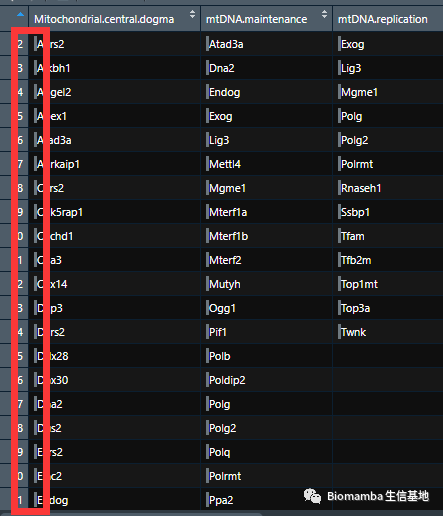
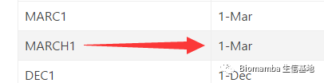

珍爱生命，远离Excel
原文：https://mp.weixin.qq.com/s?__biz=MzAwMzIzOTk5OQ==&mid=2247485346&idx=1&sn=ecd0a44225640f377a8b8bfc03facf31&chksm=9b3f7ef2ac48f7e4d486e8945b9c95f789706d1964d71fa49cac714dbc022f7c146250fcc4d9#rd 合集：漫谈胡侃
最近一直在从事线粒体相关的研究，从Mouse.mitoCarta数据库中下载了一个excel ，把GSVA和WGCNA分析了一通。本想着把这些基因都删除研究研究数据库外的基因，发现怎么也无法删除，定睛一看，原来数据之中包含空格 。要命的是，后续的GSVA居然都没有报错，并且成功的运行了下去。。。这就是Excel隐藏特殊字符带来的弊端，Linux里的cat -A才是照妖镜。

别给我律师函警告，Excel是个好东西，但是生信工作者应该远离。最经典的bug就是Excel中的一些基因名会被自动转换为日期：

所以说，大家分析数据的时候，Excel能不用就不用，bug这种东西，只有你想不到，没有它做不到。不说了，我去返工了。

如何联系我们
 最近发现后台中有一些消息我没能及时看到并答复，微信后台中超过48h后便不允许回复读者消息，这里还是再给大家留一下答疑的扣扣号，方便大家随时交流。微信号可以点击喜欢作者 后自动回复里有。欢迎大家向我咨询或者提供建议。大家可以阅读完这几篇之后添加我：如何搜索公众号过往发布内容
答疑公约
笑一笑也就算了
最近发现后台中有一些消息我没能及时看到并答复，微信后台中超过48h后便不允许回复读者消息，这里还是再给大家留一下答疑的扣扣号，方便大家随时交流。微信号可以点击喜欢作者 后自动回复里有。欢迎大家向我咨询或者提供建议。大家可以阅读完这几篇之后添加我：如何搜索公众号过往发布内容
答疑公约
笑一笑也就算了